Important:
This is a fictional story!
All the pitchure are fully AI generated!
Lets dive into the fantasy world!
Evil Virus Against The Clock!
The clock is ticking by... Not much time left before our lives end up in the wrong direction... Only if there was a way out...
Before the end...
Me and my tribe were a very small tribe. I was one of the first to be mastered by the leader's magical powers; he trusted me and I in him.
Later that year
I traveled with my friend named TheDemon. TheDemon was new to the tribe, but that did not make him weak; he was one of the stronger in the tribe. We were going on a long journey to find a place to build a new tribe called Greenspire. We wanted to make our own place where we could have more freedom.
A few months later
Me and TheDemon, my faithful friend, managed to build our tribe in the world of Territorial. But we got sick, really sick. We needed to find a leader who could take care of our tribe. We chose a young man named Haidar. We were incredibly nervous about this choice due to not knowing much about him but we had no other choice and he was one of the oldest members of our tribe...
Weeks pass
Me and TheDemon are starting to get healthier so we are starting to take more responsibility for the tribe as we did before. For some strange reason, while we were sick, Haidar disappeared into a cave between two and three at night. No one knew what was going on inside that cave and when asked what he was doing in the cave he said it was nothing special. But that will soon turn out to be a lie...
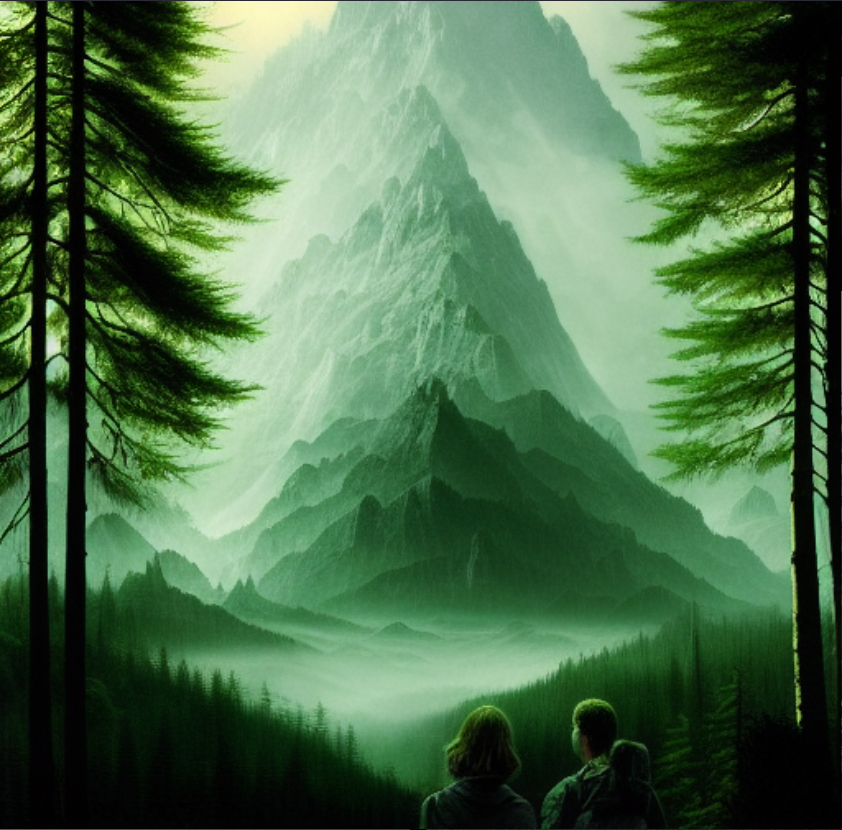
The mystery of the cave
The days went by.
We were visited by a magical wizard named Matematyk. He would use his powers against enemies and to get a good harvest within our tribe in exchange for shelter and food. We thought it was a good deal, so we agreed to it.
I was very fascinated by him so I asked him to create a magic drink that could make us stronger and he agreed to it, but it would take him two days before it would be ready due to him being a polish pope that leads to him not working on sunday.
One day before the drink is ready.
TheDemon and I became more and more worried about Haidar because he started to get a little crazy; for example, he plucked the feathers on the buttocks of the hens so he could see their pink buttocks, and every night he goes to a cave that i have never seen before. This night was special; it was not only Haidar that was gone, but Matematyk was also gone. We searched for him all night, but we did not find a trace of him, so we thought he had left the tribe for good...
The day when the drink would be ready...
TheDemon was curious about what was in the cave, so he snuck in to see what was going on when Haidar was busy.
It was dark and cold, and there was nothing there until TheDemon heard a dark strange sound from further in the cave. It was an inhuman sound. TheDemon was not going to go there at first, but he was very curious. He went in and started seeing books about black magic. It is the forbidden magic that only the evil ones use, and he found Matematyk firmly tied to a Stalactite. The sound he heard from the beginning came from him snoring.
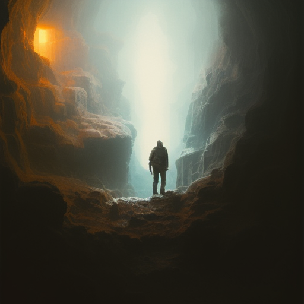
Hello, Matematyk woke up, TheDemon shouted.
He did not answer, so TheDemon gave him a slap on the cheek and he woke up.
Thank you for helping me. Haidar kept me trapped here and forced me to give him the magic drink. With the help of the drink and his black magic that he has been doing in here, he will murder you and TheAngel to gain power over the tribe, said Matematyk.
At the same moment, Matematyk and TheDemon heard a cry for help. It was TheAngel...
Hurry hurry shout TheDemon, we have to save them.
Down by the village at the same moment.
I knew you could not be trusted from day one. I was nervous about our choice and we had no other choice because we were so sick. Said TheAngel, screaming at the giant Haidar who had drunk the magic drink that Matematyk had created. It was an intense battle, but any second I knew I would fall because his power was too powerful. My only hope was that TheDemon would get to the village on time, but I did not expect him to; Haidar’s force was close to destroying me. At the last second, the leader from my old tribe came. He who gave me my powers in the first place helped me destroy Haidar, but he managed to escape Haidars’s last word was "I will come back but in an unexpected way!"
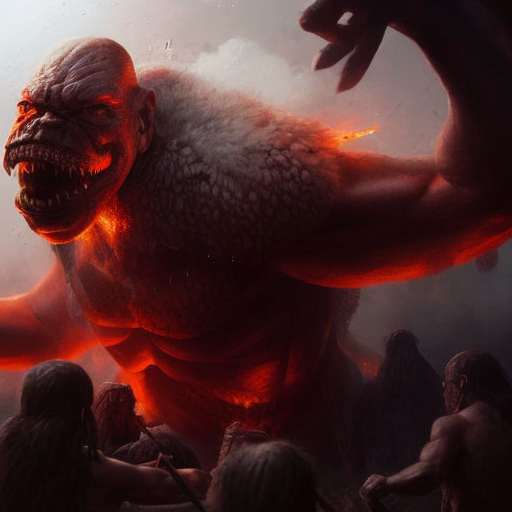
The escape of fire
That Night at Camp Fire.
I, TheDemon, Matematyk and my old leader of the "Cum" world by the name of Kyivan who saved me, sat at the campfire, and we would come up with a plan to destroy the Haidar once and for all.
Before we had time to talk, the strange man paper came. He is an annoying person, but he always took care of Kyivan. I personally did not like him, but it does not matter at the moment.
Kyivan got a new idea to brew a new magic drink. But Matematyk told him that the Haidar had sucked up all his power.
Paper thought we should attract him with feathers from hens because he seems to like them... Luckily, he is strong, otherwise paper would be unnecessary because his smartness is not at the top.
TheDemon saw a shadow by a tree. It was Haidar, he used his dark powers to burn our small tribe; we fled as fast as possible. We were on our way to the "cum" world where we had reinforcement and where we could stay for a while.
During the escape from the fire, TheDemon fell, and he started to burn.I saw him catch on fire. I saw my life flash through good old memories with him. At one point I thought I could hear him through my memory shouting for help. But the walls for fire prevented me from helping him. I had no path towards him.
If it was not for Matematyk who went back to take him up on his back, he would be dead already.
On my way came a guy running. I hadn't seen for a long time. It was Biffeur my childhood friend; he said he saw the fire and would keep the Haidar away while the rest of us went to their tribe.
When we arrived at the Kyivan tribe, Marino took care of the TheDemon while the rest of us rested.
Marino was a tribe medic and worked closely with Zapmonkey who was also a medic.
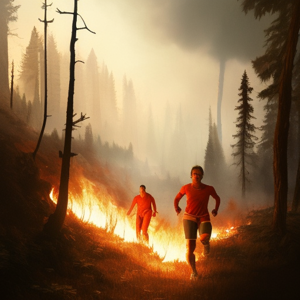
The next day
Kyivan wondered what had happened to Biffeur, so he sent an army where we saw Biffeur last.
When the army came back they told…
That they could not find Biffeur; the only thing left was burnt clothes that he loved and wore every single day.
Kyivan was really frustrated that he had lost Biffeur But it was not the first time he had lost something valuable. Before my existence, it was a dragon that killed half the tribe that belonged to Kyivan; it was a story told by the elderly when I was a child.
A few hours later, Kyivan received a message about Biffeur.
Marino and Zapmonkey came running to Kyivan's tent, so I ran after them to find out what had happened. It was apparently so that TheDemon had gotten worse; there was not much hope left; his heartbeat was getting slower.
Marino and Zapmonkey said that one thing we could do was pick up a golden apple from the dark side where the tyrant Hulk ruled.
Kyivan thought for a while about who could do the job; it was not an easy choice, but in the end he chose Mike, Mike had powers such as changing identity and speed. Kyivan thought it was a suitable choice, and I agree that it was a good choice.
The adventure that Mike would embark on was not easy, but all in order not to lose another ally.
It would take him five days to complete the mission, and if anyone noticed that he was there, there would be war between the two kingdoms.
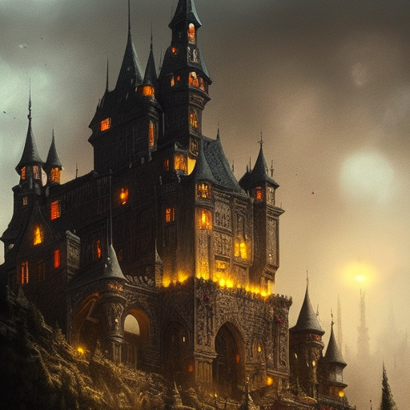
First day to find the golden apple.
Matematyk and I were to accompany Mike in the beginning to protect him from unexpected things like bandits. The day went like butter, but it was a strange thing that happened the day we were met by an old man by the name of Muddy; he sold food and magic invisibility drinks. We bought an invisibility drink and then we left. He said one thing before we went : "Beware of the king over the dark area you never know what he has in mind and also if you see feathers run for your life!"
Second day to find the golden apple.
Me and Matematyk returned. We could not continue for the chance that they would discover us was too high when we were three.
We took the same road as we came when we arrived at Kyivan's tribe. I could see armed riders in place. It was none other than Synthom and his army; they had sharp swords and axes. Synthom and his tribe lived by the "raging" river; their tribes were formed by Fynx, who was killed in a fight against Hulk. It went badly, but he managed to fight him for several years and will always be remembered for the time he spent on his tribe.
Synthom came to Kyivan to ask about the composition of our tribes because we had had a good relationship for a long time and it was easier to protect each other from danger. Kyivan needed to think about it, but Kyivan did not want them to leave; he offered them a place to sleep and food. During the evening we sat by the campfire and sang songs and told stories to each other. The whole time I had Mike in mind: What would happen if he died or maybe got caught? No one could save him without blood between the kingdoms.
Synthom came to Kyivan to ask about the composition of our tribes because we had had a good relationship for a long time and it was easier to protect each other from danger. Kyivan needed to think about it, but Kyivan did not want them to leave; he offered them a place to sleep and food. During the evening we sat by the campfire and sang songs and told stories to each other. The whole time I had Mike in mind: What would happen if he died or maybe got caught? No one could save him without blood between the kingdoms.
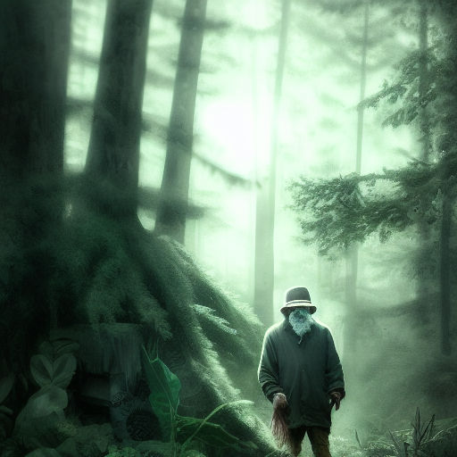
The day Mike would return.
Kyivan decided that Synthom and the Force would remain because of the evil forces growing stronger.
The same day me and Matematyk took our donkeys called Harsh and Estonia, we were to meet at Muddy stall where we last saw Mike but Mike was not here; the only thing we saw were feathers from hens and a golden apple that was needed for TheDemon. My first thought was that something had happened to Mike, but we did not have time to think about it due to problems that we would soon encounter...
Matematyk saw a shadow. It must be Haidar. He came out of the shadows and said: We meets again, as I said, but this time you will both die, you and your friend. Matematyk checked on me and I on him. Before we had time to react, he put Matematyk on fire and that was the last of him. Now it was just me and Haidar left or that was what I thought at first. Before I was able to cast my spell on Haidar, Mike jumped down on Haider and Haidar fled at full darkness speed with dark bird-like wings.
We lose one man, but we save another. Another adventure where we have lost a close friend in a second. From now on I was alone at night. Me and Matematyk usually sit in the evenings and play with our baby Geko that happened to be killed by Kyivan one day when he did not see where he was sitting. It was a gloomy day for us, but today was the gloomiest day for me.
Marino and Zapmonkey came rushing to us and took the golden apple we did not even have time to greet before they disappeared back into the medical tent. At night Marino and Zapmonkey came to us by the campfire and said that it was too late. TheDemon has become too weak, and giving him the apple is pure waste because it would only stop him from dying for a few days and it would only be suffering. Synthom wanted us to have a ceremony for the dead the next day to guide them to the path of light instead of the "path of the feathers.”
The dragon's valuable treasure
Today was ceremony day for the dead. Among the dead was the legendary Fynx then it was Matematyk, TheDemon and the dead who died of the dragon before I existed.
The dragon named Novo lives by a tower where he guards his treasure and the princess. Many soldiers have tried to save Princess Scarl who was a beautiful girl or get hold of the treasure but failed many times due to getting distracted by Scarls wonderful face that normally leads to the dragon burning the soldier alive.
When the day of remembrance was over, we saw the dragon. In the long run he was certainly out to find more valuable artifacts; he only leaves his tower once a year.
Kyivan had a plan he would create a necklace with which he could control the dragon. For that he needed Easytiger, Easytiger is the suspicious magic blacksmith he lives in a tree no one knows where only he and his shadow but Kyivan knew exactly how to attract Easytiger, what was needed was cake soup he comes at a whopping 1000 kilometers per hour if he smells it.
Throughout the day, we collected ingredients ranging from sugar to eggs. We needed a lot so the scent would spread long and far.
The day when chef Kyivan would cook cake soup.
He put in all the ingredients plus a surprise. The surprise was Paper. Paper jumped into the batter no one knows why but it's still paper what can you expect.
Took no less than a few hours before Easytiger arrived.
Easytiger said cake soup first then we could talk.
Easytiger devoured several kilos of cake soup; surprisingly, he was not fat.
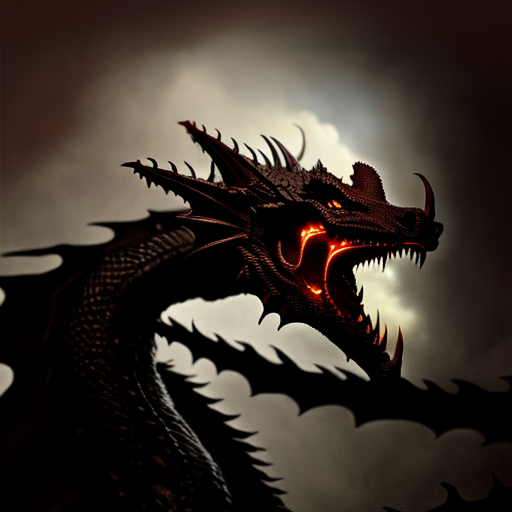
When EasyTiger finished eating everything, he wanted more. He was still hungry. How? The cake soup was enough for the whole tribe. How he managed to eat everything and want more was shocking to me...
Kyivan answered that we could exchange a magic necklace with a new batch of cake soup. Easytiger did not wait a second and answered: yes, of course; however, it would require a little more of the secret ingredient that I had never tasted before.
Kyivan start cooking new batch of cake soup while Easytiger disappeared in the woods, they decided to meet at midnight at the big magic oak it is one of Easytigers favorite place due to lack of light, and it is guarded by elves; the elves' leader is no less than mommy Cynder; a queen in some eyes, but disgusting sight in the eyes of others. Kyivan, who is one of those who does not have a good relationship with Cynder, still agreed to it because there was no time to negotiate.
This time Kyivan asked Paper to jump into the cake soup from the beginning but Paper could not bear it, so to flavor the soup the Paper had the idea to cut off his hand before Kyivan had time to stop him, so Paper chose the sharpest sword; and since Paper could not distinguish between hand and foot, he cuts off the whole foot. The blood was spreading everywhere. Marino and Zapmonkey came rushing as if they could smell blood.
In the end, the cake soup turned out well and Paper foot became a wooden stump which he is very happy with. He believes that it will be a trend to cut off the foot and get a wooden stump. He was about to cut his other foot but marino held him back before he had a chance to do that.
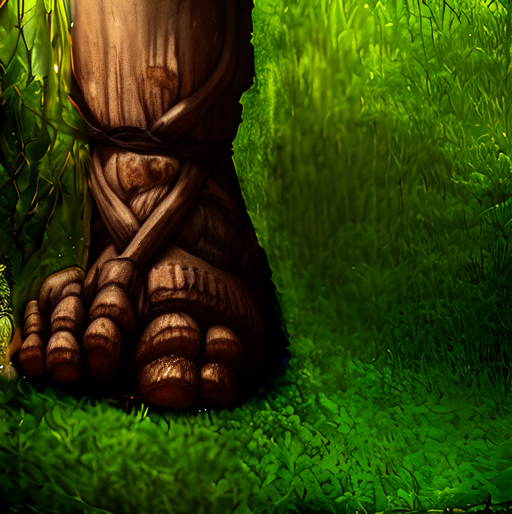
At midnight we pulled towards the big magic oak I, Kyivan, and Synthoms soldiers. It was a short journey that felt like several long hours of hiking due to the cold. I had never felt so many shivers since TheDemons death. At the oak, Cynder stopped Kyivan from passing due to their previous quarrel. After a few minutes, she agreed to let us pass everyone except Kyivan in exchange for some fun time with one of Synthom soldier after a few steps towards the oak. I could hear the quarrel between Kyivan and Cynder, but no one cared. Our mission was to exchange the cake soup for the magic necklace and their quarrel is usually for hours and we do not have that time. The exchange would take place shortly.
Shortly after we arrived, Easytiger arrived with the golden magic necklace; the change went quickly and just as quickly he ate up the cake soup and disappeared. Before he left he said I can smell an imposter among us.
On the way back a shadow was obscured, a shadow as dark as the interior of the mines; we suspected that Haidar was sneaking around. But we were ready to fight for our lives, and we had the elves by our side.
This time it was faster to walk back. We picked up Kyivan and took the nearest road home. The hardest thing was to bring back kyivan with us. He wanted to keep arguing with mommy Cynder but the rest of us were tired. So we did as all people would do… Kidnapping Kyivan back to the tribe was easily done with the help of Synthom's soldiers.
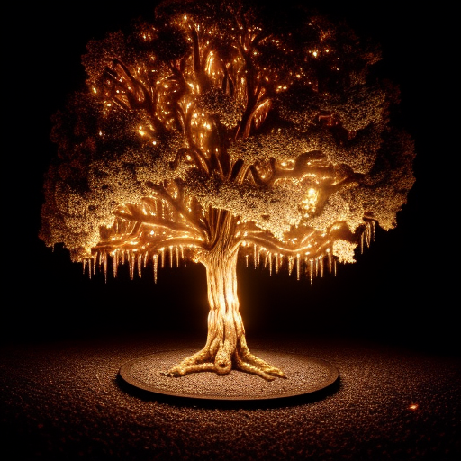
The battle of the daredevils
Synthom and Kyivan gathered a few men; the best of the best; it would not be an easy battle, and no one expected to survive the battle; the goal was to save the princess and steal all valuables in the tower.
The plan went so that we would distract the dragon while Synthom and his soldiers climbed on the dragon and attached the necklace and then...
While we were planning the dragon was here, we did not have time to react, so Kyivan threw a formula on one of the soldiers' shields which then bounced against the dragon's eye and the dragon started to spray fire around us with a disgusting breath. The soldiers started on the plan and we did our best to distract the dragon. On several occasions me and those who would distract were almost killed from all the fire. The soldiers managed to get the necklace tied around the neck by climbing up on him, but one soldier fell; it was Superkza; there was no chance that he survived that height.
We managed to save Princess Scarl and take control of the dragon and its valuable things.
Before we had time to leave the place, the dragon Novo grumbled the words: I am a strong dragon, a dragon with the power to destroy all you have, give me freedom and I will help you with yours. If not, a bloody battle will be seen in the future.
Kyivan talked to me, Mike and Paper were also there for some reason and decided that he could get with us if he signs a magic pact that stops all kinds of murders of our men and chickens. Paper added chickens because he is obsessed with them.
The dragon signed and the necklace disappeared at the end. It was a successful day for everyone except Superkza.
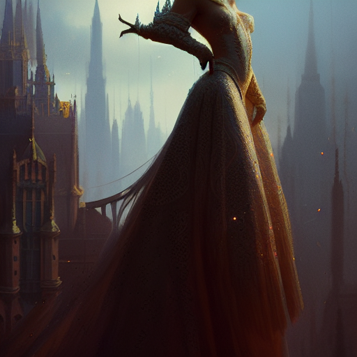
Wart origin is Legoland a city in Markden Wart has long fought to become a top soldier to make his family proud in Markdan and Punchbox was a man from a mine who had a son named Sypix sometimes he had a hard time get food on the table so he joined Synthom’s tribe for a better life for his son. Superkza was not the best soldier but silent like a mouse hidden in the twilight and the shadows he only shows up When the moon is at its highest as the same day as the dragon battle lasted.
Mike, who does not usually hang out with people, had a good relationship with Superkza. Their powers are two unique but both did the same brilliant job and were often in the shadow of everything and everyone. To discuss with them was one in a million but that night after promotion you could see Mike and his shadow shadow as real as Mike talk about that Superkza is not yet dead.
But it was probably the case that Mike had a difficult time getting over Superkza's death.
3 weeks later after superkza death
During these three weeks, Mike has behaved strangely and many think that he is starting to go crazy because he thinks he sees Superkza in the evenings. I have tried to talk with him but it was not possible to change his opinion.
When the evening came there was a storm so we stayed in our huts but that night was not an ordinary night many heard a cry for help on the horizon you could see red soldiers chasing a shaded creature it is Haidar shouted Synthom and pulled out his big sword and started led the army against Haidar just when Synthom army was about to attack. They realized that it was SUPERKZA who had survived. He was not whole but not dead nor was he bloody and goofy everywhere and he had lost an eye. The army was ready to defend against the red soldiers but they turned around.
The red wine that became blood
When the storm had subsided, we set off to check out the village next door. We were met by an elderly woman who told: The red soldiers appeared in our area it was Hulk's soldiers one of the most disgusting armé both physically and mentally it is said that they have kidnapped a couple of villagers and then sacrificed them to the god of strength and love it requires sacrificing two people and a golden stone from the mountain JellyRam to gain strength.
Legend has it that there lives a giant bear that can tear an entire arm to pieces that guard the golden stones. Only one person can be close to the bear and it is nature shaman Jelly who was one of Synthom’s best soldiers before he thought Synthom was a weak leader and decided to live among the mountains. Over the years he has learned the forces of nature and become friends with the legendary giant bear Ramen.
The whole tribe thought it was abominable and that they must be stopped whatever was required. We sent out three men. One would fetch poison from a snake not mommy Cynder but a common snake from the forest. The other was Marino he is not only an herb doctor but also an alchemist he would mix the snake venom with something to make it harder to notice the snake venom and finally we had Mike he would go into Hulk’s kitchen and put the poison in one of his wine and serve it to him.
The soldier who was zealously sent away was Wart. Wart began to move towards the forest not long after, he was met by Muddy in the forest who sold food and invisible drinks. This time he had snake venom for sale, luckily Wart had 2 gold coins to exchange for a bottle of snake venom. Wart also got a hen to buy for Paper so he could pick feathers from his ass.
When Wart came back to our area he took the snake venom to Marino and erupted medicine tents but Marino does not seem to be there no wonder as he has type 20 jobs. For example, he works as a priest, alchemist, prison guard and much more.
When wart left the snake venom at the medicine tent, I ran down to the beach with Mike and Novo. Novo wondered if he could stay with us because he felt alone when Princess Scarl was not there with him. Mike and I nodded because he was polite. At the beach we saw Marino, He is fixing shells for a necklace because he also works with making different jewelry which he then sells.
I told him that wart placed the snake venom in his medicine tent and that he could start making a red drink that would look like red wine with snake venom in it.
Marino tells us that the snake venom we got is not enough to kill a human. I told Marino to mix in something from his lab. Marino shone, he knew exactly what to do. Undisturbed, I left him alone so he could concentrate.
In the evening we were visited by Kees, an uncultured man but strong, Kyivan and Synthom pondered a bit but agreed to have him.
The next day...
During training, you could see how Kees spied on Scarl. When their training was over he went to Scarl. You could see how they talked then Scarl got angry and gave him a slap in the face. It was a strange feeling because during these days that Scarl was with us she was very nice and would not hurt someone.
The next day...
I woke up to a bang it was not a small bang It was the medicine tent, something had exploded there. I started running towards the tent. It was smoke everywhere when I arrived where Marino and Zapmonkey were lying on the ground. I started checking the pulse of both. Marino was dead but Zapmonkey survived.
But Zapmonkey did not respond. We were wondering what to do. No one was herb/medical trained. Paper of all people came up with an idea; why not feed Zapmonkey the golden apple. She is probably hungry, he said. Well the apple had some medical power so why not try it. We brought the apple and smashed it so the only thing left was apple juice. After injecting the golden apple into Zapmonkeys body he opened his eyes. After some time he was able to talk. He said that Marino was forging a necklace and a little glow came on the explosives. It did not take long before everything said bang. Zapmonkey said that the snake venom is ready to be used.
On the ground I found an old book. I asked Zapmonkey what sort of book it was. He told me that it was Marino’s diary where he writes what he does every day on one page. It says prison life in the French prison with ramen food, something we used to joke about.
I started flipping through a few pages until I came to a black page where it says: Meeting with Haidar: Dear diary:Today when I was picking mushrooms all of a sudden the darkness started to fall. It was Haidar. I became infected with the evil virus from Haidar. The person who gets infected can be controlled by Haidar or you become evil but it takes time before I am completely out of control and if someone finds out that I have become infected I die instantly. If anyone sees it, you know what happened to me. Sorry...
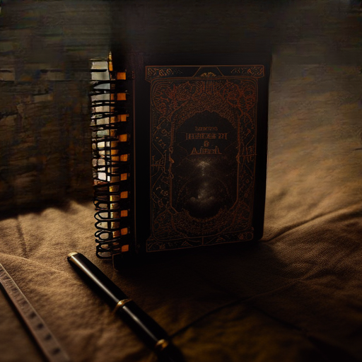
I left the tent. It was too much that happened at the same time when I left the tent I could see the Kees picking flowers. He was on his way to Scarl again. I kept my distance and carefully checked what happened from a couple of bushes. Scarl took the flowers and threw them on the ground, then she forced Kees to eat them and closed the door with a bang afterwards.
A bit tragic but it was probably not her taste and Kees has probably understood it now.
Later that day I looked for Mike but I couldn't find him so I went to the campfire where Paper and Kyivan sat. I asked for Mike. Kyivan tells us that he was already on his way to infiltrate Hulk's empire. After that Kyivan told me that I did a bad job as a leader because two of my tribe members have died Matematyk and TheDemon plus it was my fault we gave the responsibility to Haidar when we were sick and that's why he wanted me to give the Greenspire tribe medal which is the tribe symbol. I didn't agree and decided to leave. I found a cave where I chose to live.
2 weeks later...
I was visited by Mike. He told me that it was a failure and that the village needed my help. He also said that the poison hurt Hulk but Hulk survived because he did not drink everything and that it was pure chaos. Novo had apparently scared away a man named Doomsie along with another man and Kees who never managed to win Scarl's hand wandered off they started an evil sect Kees did not leave empty handed he got a last slap some people say Scarl are better at slaps then sir will smith the second a real master slapper. Cynder, who usually visits the village, sometimes had a fight with Doomsie and Kyivan before Doomsie wandered off. It wasn't great because Scarl chose to become elves because Cynder and Scarl had a good relationship.
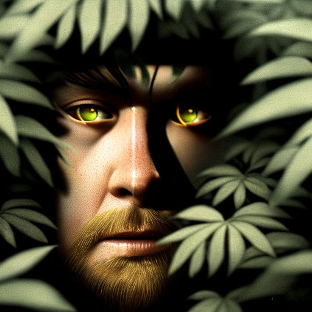
I packed up my things and took a shortcut through the jungle where I was met by Sypix and his son Ronxina. Ronxina was really thin and young. Sypix looked like any other person but he had a problem. Sypix has been cursed since birth so wherever he went he saw everything in a sussy way. They were on the way to the tribe so we went together. Sypix and his son Ronxina wanted to apply to become soldiers Because their work on their tribe did not pay well.
When we arrived we were met by the fool Tomfoolerous. The only thing he does is try to entertain and make fun of people. This time I was the target but I ignored him. He said you're lucky you're not a chicken or you'd be ass-picked by paper before you could even escape from the tribe.
I started walking towards Kyivan. He looked different. We just stared at each other wordlessly. Then I tried to find Synthom to help Sypix and Ronxina apply to Synthom then I saw a shadow.
Could it be Haidar? After i shaked my head it went away. Could it be an illusion? I did not say much, because if I told Sypix he would be paranoid he sees everything very sus we just continued into the Synthom’s tent.
Synthom asked me to leave them alone so I ran to my tent but backed away immediately. It was the BIG bear Ramen and Jelly. They had taken over the tent while I was away. They were apparently supposed to be with the tribe as their blue berries started to disappear due to some evil, I wonder who... Probably the bear could tear me to pieces and you never know what Jelly can do.
I went to the fireplace where Paper was sitting with his chickens. They didn't have a single feather left. He told me that their ass was gone so he started picking everywhere. Apparently most people had gathered here because there was a lack of food, even Easytiger who devours in itself lots of cake soup right now.
Novo, Kyivan and Mike decided that it is best if we split up and find a new place with food we would divide into five groups each with a leader.
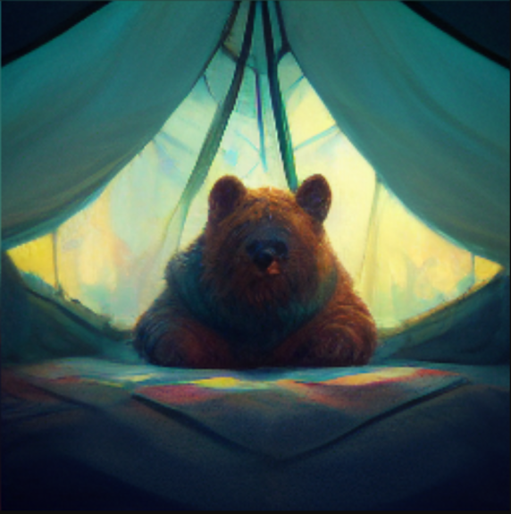
Final Straw
After they decided to split up, I was left outside, alone in the darkness surrounded by hungry wolves. The only one who had ever contacted me was a bird sent by Mike, my long and beloved friend. I was left outside because I had never gave the Greenspire tribe symbol to Kyivan.
Life was going great until one day the news came that Zapmonkey had been killed and they needed me. Haidar had killed an innocent person who had never done anything wrong to any human. That was the final straw for me. I would take over the Zapmonkey army, even though I hated Kyivan. I still wanted revenge for what happened to Zapmonkey.
When I returned, people greeted me with love and a nice feast. But when midnight struck, they all started looking at me strangely, as if they wanted my blood. They got closer and closer, and they all had Haider's face... The clock is ticking by... Not much time left before our lives end up in the wrong direction... Only if there was a way out...
Haider emerged from the ground and shot a fireball. I could feel the heat, but it missed... I reached for my magical staff, but the infected took it away from me. In the end, it was too much for me to handle...
I could feel the heat, and then everything went dark... I started to hear a beep. It went like beep... beep... beep... It was the sound of an alarm clock. It was all just a nightmare... The heat was the sun hitting my sweaty skin.